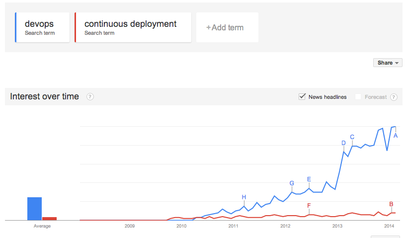
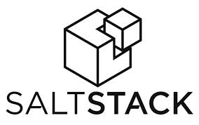
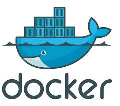
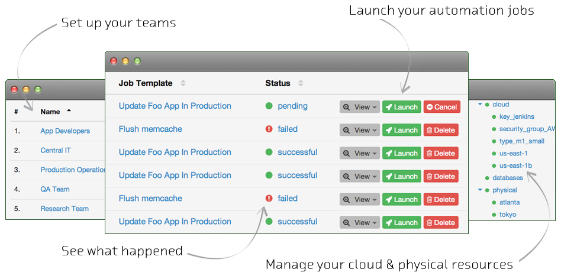

<!DOCTYPE html>
<html lang="en">
  <head>
    <meta http-equiv="content-type" content="text/html; charset=UTF-8">
    <meta charset="utf-8">
    <title>Devops</title>
    <meta name="description" content="DI en Clojure">
    <meta name="author" content="Claude Falguière">
    <meta name="apple-mobile-web-app-capable" content="yes">
    <meta name="apple-mobile-web-app-status-bar-style"
      content="black-translucent">
    <meta name="viewport" content="width=device-width,
      initial-scale=1.0, maximum-scale=1.0, user-scalable=no">
    <link rel="stylesheet" href="../revealjs/css/reveal.min.css">
    <link rel="stylesheet" href="../revealjs/css/theme/simple.css"
      id="theme">
    <!-- For syntax highlighting -->
    <link rel="stylesheet" href="../revealjs/lib/css/zenburn.css">
    <!-- If the query includes 'print-pdf', use the PDF print sheet -->
    <script>
      document.write( '<link rel="stylesheet" href="../revealjs/css/print/' + ( window.location.search.match( /print-pdf/gi ) ? 'pdf' : 'paper' ) + '.css" type="text/css" media="print">' );
    </script>
  </head>
  <body>
    <div class="reveal">
      <!-- Any section element inside of this container is displayed as a slide -->
      <div class="slides">
        <section data-markdown="" data-background="images/colis.jpg">
        <script type="text/template">
        #Devops
        ###Derrière la théorie, la réalité
        [@cfalguiere](http://twitter.com/cfalguiere)
	
        [Claude Falguière](https://cfalguiere.wordpress.com)
	
        ---
        ###Women Techmakers Nantes
        ###6 mars 2014
 	</script>
	</section>

	
	       <section data-markdown="" data-background="images/colis.jpg">
          <script type="text/template">
## DevOps
<br>

 	</script> </section>

      <section data-markdown="" data-background="images/colis.jpg">
          <script type="text/template">
## Deux métiers différents
<br>
<table>
  <tr>
        <td style="text-align:center" > <b>Dev</b> <br><br> construire un produit pour des utilisateurs dans un
        cadre de temps donné</td>
	<td style="vertical-align:middle" >=&gt;</td>
	<td style="text-align:center" ><b>D&eacute;ploiement</b>
          <br><br>mettre le service à disposition des utilisateurs</td>
	<td style="vertical-align:middle" >&lt;=</td>
	<td style="text-align:center" ><b>Op</b> <br><br>fournir les moyens d’infrastructure <br>et<br> assurer le MCO du
service fourni aux utilisateurs sur le long terme</td>
  </tr>
</table>

<br>
<br>
	</script> </section>

        <section data-markdown="" data-background="images/colis.jpg">
          <script type="text/template">
## Le jour o&ugrave; la MEP s'arrêta

 	</script> </section>


 
        <section data-markdown="" data-background="images/colis.jpg">
           <script type="text/template">
## Nouveaut&eacute; vs Stabilit&eacute;
<br>


  	</script> </section>
	
        <section data-markdown="" data-background="images/colis.jpg">
           <script type="text/template">
## Question de point de vue
<br>

perception du changement<br><br>
nombre d'applications<br><br>
horizon de temps<br><br>
spécialisation et silos
  	</script> </section>

	
	
        <section data-markdown="" data-background="images/comm.jpg">
           <script type="text/template">
## Travail d'&eacute;quipe
<br><br>
principes Agile<br><br>
clarifier les responsabilit&eacute;s<br><br>
prendre en compte les user stories des ops<br><br>
anticiper les besoins de mont&eacute;e en comp&eacute;tence
  	</script> </section>

        <section data-markdown="" data-background="images/comm.jpg">
           <script type="text/template">
## Mr Inquiet
<br>
<table><tr><td style="vertical-align:top">
<h3>Rassurer</h3>
Regarder les problèmes <br>
  en face<br>
  </td><td style="vertical-align:top">

    </td><td style="vertical-align:top">
<h3>Réduire l'enjeu</h3>
livraisons fréquentes<br>
non-&eacute;v&eacute;nement<br>
        =&gt; déploiement continu
  </td></tr></table>
  	</script> </section>

        <section data-markdown=""  data-background="images/comm.jpg">
           <script type="text/template" >
## Bonnes pratiques
<br><br>
Fass Fail <br><br>
livraison continue <br><br>
design for failure <br><br>
KISS <br><br>
  	</script> </section>
	
        <section data-markdown="" data-background="images/outils.jpg">
           <script type="text/template">
## Automatiser
<br><br>
r&eacute;duire les erreurs et les d&eacute;lais <br><br>
processus défini => outiller => automatiser<br><br>
  	</script> </section>
	
        <section data-markdown="" data-background="images/outils.jpg">
           <script type="text/template">
## Infrastucture as code
<br><br>
Automatiser le provisioning

  	</script> </section>
	
        <section data-markdown="" data-background="images/outils.jpg">
           <script type="text/template" >
## L'écosystème DevOps
<br><br>
  <table><tr><td>
  
  
    </td><td style="text-align:center">
  
  
    </td><td>
  
  
    </td><td>
  
  
      </td></tr></table>
  	</script> </section>
	
        <section data-markdown="" data-background="images/outils.jpg">
           <script type="text/template">
## Ansible
<br><br>
Playbook<br>
Inventaire<br>
Rôles, Tâches<br>
Module<br><br>
Extensible<br>
Indempotence<br>
Templating<br>
Parall&eacute;lisation<br>
Pas de portabilit&eacute; inter-distribution
	</script> </section>

        <section data-markdown="" data-background="images/outils.jpg">
           <script type="text/template">
## Example Ansible Playbook
<br>
inventaire.yml
<pre><code>[web_servers]
web[0:4]
</code></pre>
site.yml
<pre><code>- hosts: web_servers
  tasks: 
     - name: install server
       action: apt pkg=apache2 state=present
       notify: apache2 restart

     - name: configure server
       action: template src=httpd.conf
       dest=/etc/apache2/httpd.conf
</code></pre>
run
<pre><code>
$ ansible-playbook -i inventaire.yml site.yml
</code></pre>
	</script> </section>

        <section data-markdown="" data-background="images/outils.jpg">
           <script type="text/template">
      ## Ansible tower
      <br>
  
	</script> </section>
     
        <section data-markdown="" data-background="images/outils.jpg">
           <script type="text/template">
## D&eacute;mo
	</script> </section>

        <section data-markdown="" data-background="images/colis.jpg">
           <script type="text/template">
## Conclusion
<br>
### R&eacute;duire l'enjeu
### Ne pas fuir les probl&egrave;mes
### Automatiser ce qui est r&eacute;current

<br>
### Questions ?
<br>
@cfalguiere      
	</script> </section>

     </div>
	
      </div>
      <script src="../revealjs/lib/js/head.min.js"></script>
      <script src="../revealjs/js/reveal.min.js"></script>
      <script>

      // Full list of configuration options available here:
      // https://github.com/hakimel/reveal.js#configuration
      Reveal.initialize({
        controls: true,
        progress: true,
        history: true,
        center: true,

        // Enable the slide overview mode
        overview: true,

        theme: Reveal.getQueryHash().theme, // available themes are in /css/theme
        transition: Reveal.getQueryHash().transition || 'default', // default/cube/page/concave/zoom/linear/fade/none

        // Optional libraries used to extend on reveal.js
        dependencies: [
          { src: '../revealjs/lib/js/classList.js', condition: function() { return !document.body.classList; } },
          { src: '../revealjs/plugin/markdown/marked.js', condition: function() { return !!document.querySelector( '[data-markdown]' ); } },
          { src: '../revealjs/plugin/markdown/markdown.js', condition: function() { return !!document.querySelector( '[data-markdown]' ); } },
          { src: '../revealjs/plugin/highlight/highlight.js', async: true, callback: function() { hljs.initHighlightingOnLoad(); } },
          { src: '../revealjs/plugin/zoom-js/zoom.js', async: true, condition: function() { return !!document.body.classList; } },
          { src: '../revealjs/plugin/notes/notes.js', async: true, condition: function() { return !!document.body.classList; } }
        ]
      });

    </script> </div>
  </body>
</html>
